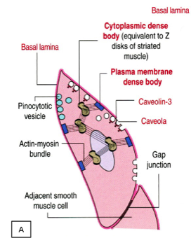
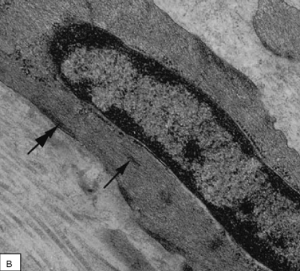

Organisatie van actine en myosine in ‘gladde’ spieren:
In gladde spiercellen zijn actine en myosine op een heel andere manier georganiseerd. We treffen hier in het cytoplasma en ter hoogte van het celmembraan ‘dense bodies’ aan, waaraan de actinefilamenten gebonden zijn. Deze ‘dense bodies’ vormen dus het equivalent van de Z-schijven die we in dwarsgestreepte spiercellen perfect geordend in sarcomeren aantreffen. In geactiveerde gladde spiercellen zullen myosinefilamenten bundels vormen samen met de actinefilamenten.
Ook bij gladde spiercellen zal contractie dus ontstaan door het verschuiven van actine ten opzicht van myosine.
In gladde spiercellen zijn actine en myosine op een heel andere manier georganiseerd. We treffen hier in het cytoplasma en ter hoogte van het celmembraan ‘dense bodies’ aan, waaraan de actinefilamenten gebonden zijn. Deze ‘dense bodies’ vormen dus het equivalent van de Z-schijven die we in dwarsgestreepte spiercellen perfect geordend in sarcomeren aantreffen. In geactiveerde gladde spiercellen zullen myosinefilamenten bundels vormen samen met de actinefilamenten.
Ook bij gladde spiercellen zal contractie dus ontstaan door het verschuiven van actine ten opzicht van myosine.


(A) Schematisch overzicht van een gladde spiercel. ‘Dense bodies’ vind je zowel terug ter hoogte van het cytoplasma als van de celmembraan.
(B) Transmissie-elektronenmicroscopisch beeld van een gladde spiercel. Merk op dat lichaampjes aan de plasmamembraan (dubbele pijl) en in het cytoplasma de dense bodies (pijl) wel te zien zijn, maar de organisatie van de myofilamenten onduidelijk is.
(B) Transmissie-elektronenmicroscopisch beeld van een gladde spiercel. Merk op dat lichaampjes aan de plasmamembraan (dubbele pijl) en in het cytoplasma de dense bodies (pijl) wel te zien zijn, maar de organisatie van de myofilamenten onduidelijk is.
Zoals je merkt zijn actine en myosine bij dit type van spiercellen niet in sarcomeren en myofibrillen georiënteerd waardoor ze geen dwarsstreping vertonen, waarnaar de naam ‘gladde’ spiercellen verwijst.
Sluit dit venster en ga terug naar het zelfstudiepakket